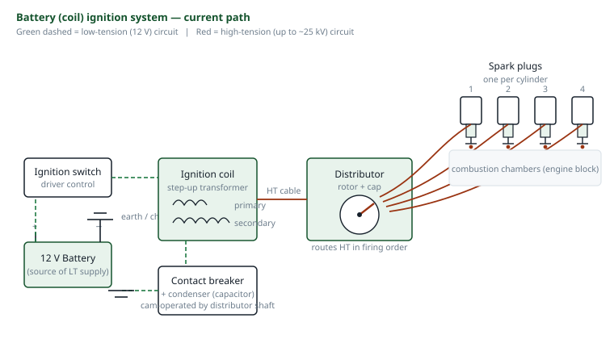
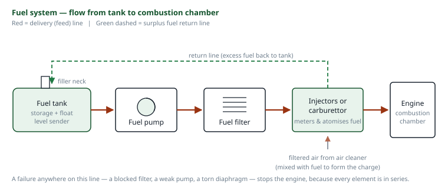
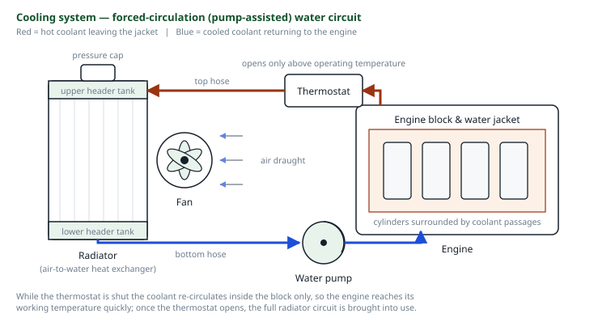
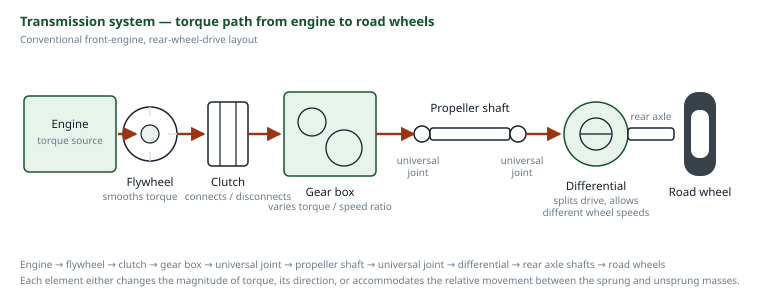
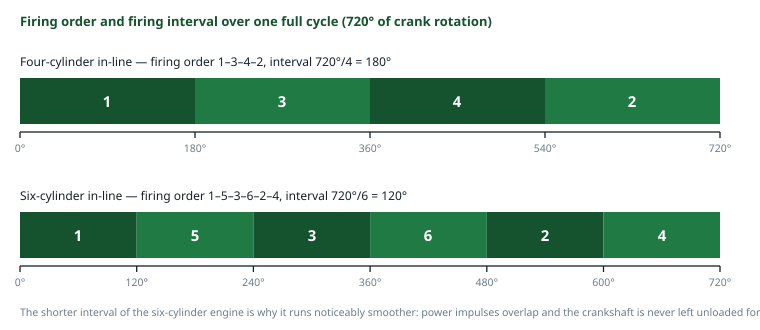

Section: Automobile / Vehicle Systems · Codes AS 301 & AS 302
Vehicle Systems: Ignition, Fuel, Cooling, Lubrication and Transmission
A motor vehicle is not one machine but five or six interdependent systems sharing a chassis. Each exists because the internal combustion engine, left to itself, would fail in a specific way: it would not ignite, or would not be fed, or would seize within a minute from heat or from friction, or would be unable to move the vehicle from rest. This report treats each system in turn as the answer to the problem it solves.
1 Aims
The aim of this practical is to study the principal systems of the motor vehicle — ignition, fuel supply, cooling, lubrication and power transmission — to identify their components on an actual vehicle and on sectioned demonstration units in the automobile workshop, and to be able to describe the function and operating principle of each.
The wider aim is to see the vehicle as a production engineer rather than as a driver. Each of these systems is a solution to a constraint imposed by the four-stroke cycle, and the design of each is a compromise between performance, cost, reliability and serviceability. Understanding why a component exists, and what fails if it is absent or badly maintained, is the difference between being able to name the parts and being able to diagnose a fault.
2 Objectives
- To identify the major systems of a motor vehicle and the components of each.
- To describe the ignition system and trace the path of the spark from the battery to the plug.
- To describe the fuel system and the preparation of the air–fuel mixture.
- To describe the cooling system and explain the function of the radiator, water pump, thermostat and fan.
- To describe the lubrication system and state the functions of the lubricating oil.
- To describe the transmission system and trace the flow of power from the engine to the road wheels.
- To state and explain the firing order of four-cylinder and six-cylinder in-line engines.
3 Apparatus
- Motor vehicle (workshop demonstration unit)Complete vehicle for identification of systems in situ.
- Sectioned engineCut-away four-cylinder engine showing pistons, crankshaft, camshaft, valves and oil galleries.
- Sectioned gearbox and clutch assemblyDemonstrating gear trains, synchromesh and the clutch friction plate.
- Differential and final drive unitCrown wheel, pinion and planetary gear set.
- Ignition componentsBattery, ignition coil, distributor, contact breaker, condenser, HT leads, spark plugs.
- Fuel system componentsFuel pump, filter, carburettor (and injector for comparison), air cleaner.
- Cooling system componentsRadiator, water pump, thermostat, fan, hoses, pressure cap.
- Lubrication componentsOil pump, sump, oil filter, dipstick, pressure gauge / warning lamp.
- Hand toolsSpanner and socket set, screwdrivers, pliers, feeler gauges, spark plug spanner.
- Test instrumentsHydrometer for battery specific gravity, multimeter, timing light, tyre pressure gauge.
- Workshop equipmentTrolley jack, axle stands, wheel chocks, drain pan.
4 Theory and Diagrams
4.1 The vehicle as a set of systems
The motor vehicle is conventionally divided into the engine, which converts the chemical energy of the fuel into mechanical work; the transmission, which conveys that work to the road wheels at a useful speed and torque; the chassis and suspension, which carry the loads and isolate the body from the road; the steering and braking systems, which control direction and speed; the electrical system, which starts the engine and supplies ignition, lighting and auxiliaries; and the body. Within the engine itself are the auxiliary systems — ignition, fuel, cooling and lubrication — without any one of which the engine cannot run for more than a few seconds.
Almost all road vehicles use the four-stroke cycle: induction, compression, power and exhaust, completed in two revolutions of the crankshaft. Two facts from that cycle govern everything that follows. First, only one stroke in four produces power, so a single-cylinder engine delivers torque in violent pulses and multi-cylinder engines exist principally to smooth the output. Second, the fuel is burned inside the working cylinder, which means that roughly a third of the fuel's energy ends up as heat in the cylinder walls and must be actively removed, and that the piston and bearings are working within millimetres of a 2000 °C flame and must be continuously lubricated and cooled.
4.2 The ignition system
The function of the ignition system in a petrol (spark-ignition) engine is to deliver a spark of sufficient energy, at exactly the right instant, to the right cylinder. The problem it must solve is one of voltage: a battery supplies 12 V, while breaking down the gap of a spark plug in a cylinder at compression pressure requires of the order of 15,000 to 25,000 V. The system is therefore a step-up transformer with a mechanical interrupter and a distributing switch.

Components and their functions
- Battery — a lead-acid secondary cell, normally six cells of about 2 V giving 12 V nominal, which supplies the low-tension current and the heavy current for the starter motor. It is a store, not a source; the charging system replenishes it.
- Ignition switch — connects the battery to the ignition and other circuits.
- Ignition coil — the step-up transformer. It has a primary winding of a few hundred turns of thick wire and a secondary of many thousands of turns of fine wire on a common laminated iron core. The turns ratio is of the order of 1:100, and since the induced voltage is proportional to the turns ratio and to the rate of change of flux, a 12 V primary supply produces tens of kilovolts in the secondary.
- Contact breaker (points) — a mechanical switch in the primary circuit, opened by a cam on the distributor shaft. It is the heart of the system: while the contacts are closed, current builds up in the primary and establishes a magnetic field; when the cam opens them the current is interrupted, the field collapses rapidly, and the high rate of change of flux induces the high-tension voltage in the secondary. The spark is produced by breaking the circuit, not by making it.
- Condenser (capacitor) — connected across the contacts. It performs two jobs at once: it absorbs the inductive surge that would otherwise arc across the opening contacts and burn them away, and by suppressing that arc it makes the collapse of the primary field much more rapid, which directly increases the secondary voltage. A failed condenser gives burnt points and a weak spark.
- Distributor — comprises the cam, the rotor arm and the cap. The rotor arm, driven at half crankshaft speed, sweeps past the segments in the cap and routes the high-tension pulse to each cylinder in the firing order.
- High-tension leads — heavily insulated cables carrying the secondary voltage to the plugs.
- Spark plug — a central electrode insulated by a ceramic body, with an earth electrode set at a gap of typically 0.6–0.9 mm, across which the spark jumps. Plugs are made in a range of heat grades: a “hot” plug retains heat and is used in low-output engines to burn off deposits, a “cold” plug conducts heat away rapidly and is used in high-output engines to avoid pre-ignition.
- Timing advance mechanisms — centrifugal weights and a vacuum capsule that advance the moment of sparking as engine speed rises and as load falls.
Combustion takes a roughly constant time — on the order of two milliseconds — but the crankshaft turns through a greater angle in that time as speed increases. For maximum work to be extracted, peak cylinder pressure should occur about 10–15° after top dead centre, regardless of speed. The spark must therefore be delivered progressively earlier in crank angle terms as revolutions rise: at idle perhaps 8° before TDC, at high speed 30° or more. Too little advance wastes energy pushing against a descending piston; too much causes the pressure to peak before TDC, which opposes the piston, wastes work and produces detonation — the audible knocking that destroys pistons and bearings.
Modern developments. The contact breaker is a wearing mechanical part limited in the current it can switch and in the speed at which it can operate. It has been replaced in modern vehicles by electronic ignition, in which a magnetic or Hall-effect pulse generator triggers a transistor that switches the primary current, and then by distributorless systems in which an engine management computer fires individual coils directly from crankshaft and camshaft position sensors. The underlying principle — interrupt a primary current and induce a high voltage in a secondary winding — is unchanged.
4.3 The fuel system
The function of the fuel system is to store fuel, deliver it to the engine, and combine it with air in the correct proportion for the operating condition. The chemically correct or stoichiometric air-fuel ratio for petrol is approximately 15 : 1 by mass, but the engine does not want that ratio at all times: a cold start needs a rich mixture of perhaps 9 : 1 because much of the fuel condenses on cold surfaces, full power needs about 13 : 1, and steady cruising is most economical at about 16 : 1.

- Fuel tank — storage, normally at the rear of the vehicle, vented and fitted with a gauge sender.
- Fuel lines and filter — convey the fuel and remove water and particles that would block the jets.
- Fuel pump — mechanical (a diaphragm operated by an eccentric on the camshaft) or electric (a submerged or in-line pump), lifting fuel from the tank to the engine.
- Air cleaner — filters the very large volume of air the engine ingests. A restricted air cleaner richens the mixture and increases fuel consumption.
- Carburettor — the traditional mixing device. Its principle is the venturi: air drawn through a constriction speeds up and, by Bernoulli's principle, its static pressure falls; this depression draws fuel from a jet into the airstream, where it atomises. The main sub-assemblies are the float chamber, which maintains a constant fuel level with a float and needle valve so that the jet sees a constant head; the main jet; the throttle butterfly, which controls the quantity of mixture and hence the power; the choke, which restricts air for cold starting; and the idling and accelerator-pump circuits for conditions the main jet cannot handle.
- Fuel injection — the modern replacement. Fuel is delivered at high pressure through electronically controlled injectors, either into the inlet ports or directly into the cylinder, with quantity determined by an engine management unit from sensor data. It gives far better control of the ratio across all conditions, allows closed-loop control from an exhaust oxygen sensor, and is essential for meeting emissions regulations.
In a compression-ignition (diesel) engine the fuel system differs fundamentally: air alone is drawn in and compressed to a ratio high enough that its temperature exceeds the self-ignition point of the fuel, and fuel is then injected at very high pressure at the moment combustion is required. There is no ignition system and no throttle; power is controlled by the quantity of fuel injected.
4.4 The cooling system
Only about a third of the energy released by the fuel appears as useful work at the crankshaft. Roughly another third goes out of the exhaust, and the remaining third passes into the engine structure as heat. If it is not removed, the lubricating oil breaks down, the piston expands until it seizes in the bore, and the valves and cylinder head distort. The cooling system exists to remove that heat — but not too much of it, because an engine running cold is inefficient, wears rapidly, and suffers fuel dilution of the oil.

Two methods are used:
- Air cooling (direct) — fins cast onto the cylinder and head dissipate heat straight to the atmosphere, usually with a fan and ducting. Simple, light, no coolant to leak or freeze, and immune to boiling. Used on motorcycles, small engines and some aircraft. Its limitations are noise, uneven cooling around the cylinder, and an inability to hold a stable temperature across a wide range of loads.
- Water cooling (indirect) — a liquid coolant circulates through jackets cast into the block and head, carries the heat to a radiator, and returns. This is universal on cars because water has a very high specific heat capacity, the coolant can be routed to the hottest regions such as the exhaust valve seats, and the temperature can be held closely constant by the thermostat.
Components of the water cooling system
- Water jacket — passages cast around the cylinders and combustion chambers.
- Water pump — a centrifugal impeller, belt-driven from the crankshaft, forcing circulation. Without it, thermosyphon circulation alone is too slow for a modern engine.
- Radiator — a heat exchanger of many small tubes and fins between a top and bottom tank, presenting a very large surface area to the air stream.
- Fan — draws air through the radiator at low vehicle speeds and when stationary. Modern vehicles use an electric fan under thermostatic control, so that it runs only when needed rather than absorbing power continuously.
- Thermostat — a temperature-sensitive valve, usually a wax capsule, in the outlet from the head. Closed when the engine is cold, it blocks flow to the radiator so the engine warms up quickly; it opens progressively at around 82–88 °C to admit coolant to the radiator and hold the temperature constant. A thermostat stuck shut causes rapid overheating; stuck open, the engine never reaches operating temperature.
- Pressure cap — seals the system and holds it at about 0.9 bar above atmospheric. This raises the boiling point of the coolant by roughly 25 °C, allowing a higher operating temperature without boiling and therefore a greater temperature difference to the air, which makes the radiator more effective for its size.
- Coolant — water with antifreeze (ethylene glycol) and corrosion inhibitors. The inhibitors matter as much as the antifreeze, because plain water corrodes the iron block and the aluminium head, and the resulting debris blocks the radiator core.
Never remove a radiator or expansion tank cap while the engine is hot. The coolant is above 100 °C and is prevented from boiling only by the pressure the cap maintains. Releasing the cap drops the pressure instantly and the entire contents flash to steam and erupt from the filler. This is one of the most common serious burn injuries in any vehicle workshop, and it is entirely avoidable by waiting for the engine to cool.
4.5 The lubrication system
The lubrication system supplies oil to every rubbing surface in the engine. Its functions are more numerous than the name suggests:
- Reducing friction and wear by maintaining a film of oil that separates the moving surfaces. In a properly designed journal bearing the shaft rides on a wedge of pressurised oil and does not touch the bearing at all — hydrodynamic lubrication.
- Cooling — the oil carries heat away from the pistons, bearings and camshaft, regions the coolant cannot reach. In a hard-worked engine this is a substantial fraction of the total heat rejection.
- Sealing — the oil film behind the piston rings completes the gas seal against the bore.
- Cleaning — the circulating oil carries wear particles and combustion soot to the filter.
- Corrosion protection — the film and its additives protect surfaces from the acidic products of combustion.
- Noise damping — the oil film cushions the impact loads in the bearings and the valve train.
The normal arrangement is the wet sump, pressure-feed system: oil collects in the sump beneath the crankcase; a gear or rotor pump driven from the camshaft draws it through a strainer and delivers it under pressure through a full-flow filter into a main gallery drilled along the block; from there drillings feed the main bearings, and further drillings through the crankshaft carry oil to the big-end bearings; the camshaft and valve gear are fed by further branches, and the cylinder walls, gudgeon pins and timing gears are lubricated by splash and by oil thrown off the rotating crankshaft. A relief valve limits the maximum pressure, and a bypass allows oil to continue to circulate if the filter blocks — on the principle that dirty oil is very much better than no oil.
Oil is graded by viscosity under the SAE system, and a multigrade oil such as SAE 20W/50 behaves like a thin 20-grade oil when cold, so that it circulates instantly at start-up, and like a thick 50-grade oil when hot, so that the film survives at operating temperature. This matters because the majority of engine wear occurs in the first seconds after a cold start, before oil pressure has reached the bearings.
4.6 The transmission system
The transmission conveys power from the engine to the driving wheels. It exists because of a fundamental mismatch: an internal combustion engine produces no torque at zero speed and useful torque only over a narrow band of perhaps 1500 to 5000 rev/min, whereas a road wheel must deliver very high torque at zero speed to start the vehicle moving and then turn at anything from zero to 1500 rev/min. The transmission bridges that gap.

- Clutch — a friction coupling between the engine flywheel and the gearbox input shaft. A driven plate faced with friction material is clamped against the flywheel by a pressure plate under diaphragm spring load; depressing the pedal releases the clamp. Its purpose is to allow a gradual take-up of drive so that the vehicle can be started from rest without stalling the engine, and to disconnect the drive completely for gear changing. The slipping that occurs during engagement is what converts the speed difference into heat, and it is why a clutch is a wearing item.
- Gearbox — provides a set of ratios between input and output. Low gears multiply torque at the expense of speed for starting, hill climbing and acceleration; high gears give road speed with the engine at economical revolutions; and reverse is obtained by inserting an idler gear to reverse the direction of rotation. A neutral position disconnects the drive. Synchromesh cones bring the gear and shaft to the same speed before the dog teeth engage, which is what permits a silent change without double-declutching.
- Propeller shaft — carries the drive to the rear axle in a rear-wheel-drive layout. It requires universal joints at each end because the axle rises and falls on the suspension while the gearbox is fixed to the chassis, so the angle between the two shafts is constantly changing; and a sliding (splined) joint, because that same suspension movement changes the distance between them.
- Final drive — a crown wheel and bevel pinion which turn the drive through 90° and provide a permanent speed reduction, typically of the order of 4 : 1, multiplying the torque correspondingly.
- Differential — an epicyclic bevel gear train that allows the two driven wheels to rotate at different speeds while both continue to receive drive. It is necessary because on a corner the outer wheel travels a greater distance than the inner one; with a solid axle one tyre would have to scrub, causing tyre wear, steering difficulty and stress in the axle. The differential divides torque equally between the two wheels and allows their speeds to differ, subject to the constraint that the sum of the two wheel speeds is fixed by the crown wheel speed. Its weakness is the corollary: if one wheel loses grip entirely it spins and the other receives no torque, which is why limited-slip and locking differentials exist.
- Half shafts (axle shafts) — carry the drive from the differential to the wheels.
Alternative layouts are the front-engine front-wheel drive arrangement, in which the gearbox and final drive are combined into a transaxle beside the engine and the propeller shaft is eliminated, which saves weight and interior space; the rear-engine rear-wheel drive; and four-wheel drive, which adds a transfer box and a third, centre differential.
4.7 Firing order
In a multi-cylinder engine the cylinders do not fire in the order in which they are physically arranged. The firing order is the sequence in which the cylinders deliver their power strokes, and it is chosen to meet several requirements at once:
- To space the power impulses evenly in crank angle, so that the torque output is as smooth as possible.
- To balance the engine, minimising the out-of-balance forces and couples that would otherwise shake it in its mountings.
- To distribute the loading on the crankshaft main bearings, so that consecutive firings are not concentrated on adjacent bearings.
- To avoid consecutive firing of adjacent cylinders, which would draw two successive charges from the same region of the inlet manifold and would overheat the region of the block between those two bores.
In a four-stroke engine one complete cycle occupies 720° of crankshaft rotation, and in that time each cylinder fires once. The interval between firings is therefore 720° divided by the number of cylinders:
For a four-cylinder engine, 720/4 = 180°; for a six-cylinder, 720/6 = 120°; for an eight, 90°. The greater the number of cylinders, the shorter the gap between power impulses and the smoother the engine — which is the fundamental reason a six-cylinder engine runs more smoothly than a four of the same capacity.

The common firing orders are:
- Four-cylinder in-line: 1-3-4-2 (or 1-2-4-3). The crankshaft has its throws arranged with cylinders 1 and 4 at one position and 2 and 3 at the other, 180° apart. The order 1-3-4-2 ensures that no two adjacent cylinders fire consecutively except across the 3-4 pairing, and it balances the load on the main bearings.
- Six-cylinder in-line: 1-5-3-6-2-4 (or 1-4-2-6-3-5). The crankshaft throws are at 120° and the cylinders are paired 1–6, 2–5 and 3–4, the two members of each pair reaching top dead centre together but on opposite strokes. The sequence alternates between the front half of the engine and the rear half — 1 (front), 5 (rear), 3 (middle), 6 (rear), 2 (front), 4 (middle) — which spreads both the bearing loads and the demands on the inlet manifold. The in-line six is inherently balanced in both primary and secondary forces and couples, which together with the 120° firing interval is why it is regarded as the smoothest of the common engine layouts.
The firing order is a physical property of the crankshaft and camshaft and cannot be changed. What it determines in service is the order in which the high-tension leads are connected to the distributor cap. The rule is: establish which cap terminal serves number one cylinder with the engine at TDC on compression, note the direction of rotor rotation, and then fit the remaining leads to consecutive terminals in that direction of rotation following the firing order. Leads fitted in the wrong sequence give an engine that will not start, backfires through the carburettor or exhaust, or runs violently roughly — and it is one of the most common faults introduced during servicing.
5 Table of Values
The tables below summarise the standard operating values and system data referred to above. They are reference specifications for the systems studied, not measurements taken during the practical.
| System | Function | Principal components |
|---|---|---|
| Ignition | Produce a high-voltage spark at the correct instant in the correct cylinder | Battery, switch, coil, contact breaker, condenser, distributor, HT leads, plugs |
| Fuel | Store fuel and supply an air–fuel mixture of the correct ratio | Tank, lines, filter, pump, air cleaner, carburettor or injectors |
| Cooling | Remove surplus heat and hold a stable operating temperature | Water jacket, pump, radiator, fan, thermostat, hoses, pressure cap |
| Lubrication | Reduce friction and wear; also cool, seal, clean and protect | Sump, oil pump, strainer, filter, gallery and drillings, relief valve |
| Transmission | Convey power to the wheels with variable torque and speed | Clutch, gearbox, propeller shaft, final drive, differential, half shafts |
| Electrical | Start the engine and supply ignition, lighting and auxiliaries | Battery, starter motor, alternator, regulator, wiring, lamps |
| Steering, suspension, brakes | Control direction, isolate road shock, control speed | Steering box or rack, springs and dampers, brake master cylinder and units |
| Quantity | Typical value | Remark |
|---|---|---|
| Battery nominal voltage | 12 V | Six lead-acid cells of about 2 V |
| Secondary (HT) voltage at the plug | 15 – 25 kV | Produced by a coil turns ratio of about 1 : 100 |
| Spark plug gap | 0.6 – 0.9 mm | Set with a feeler or wire gauge |
| Contact breaker gap | 0.35 – 0.45 mm | Set at maximum cam lift |
| Static ignition timing | 5 – 10° BTDC | Advancing to 30° or more at speed |
| Stoichiometric air–fuel ratio (petrol) | 15 : 1 by mass | Cold start ≈ 9:1; full power ≈ 13:1; cruise ≈ 16:1 |
| Thermostat opening temperature | 82 – 88 °C | Wax capsule type |
| Cooling system pressure | ≈ 0.9 bar gauge | Raises the coolant boiling point by about 25 °C |
| Normal coolant operating temperature | 85 – 95 °C | Held by the thermostat |
| Engine oil pressure (hot, running) | 2 – 4 bar | Limited by the relief valve |
| Common oil grade | SAE 20W/50 | Multigrade: thin cold for fast circulation, thick hot for film strength |
| Final drive ratio | ≈ 4 : 1 | Crown wheel and pinion |
| Cylinders | Arrangement | Firing interval | Common firing order |
|---|---|---|---|
| 1 | Single | 720° | — |
| 2 | In-line | 360° | 1-2 |
| 3 | In-line | 240° | 1-3-2 |
| 4 | In-line | 180° | 1-3-4-2 (also 1-2-4-3) |
| 6 | In-line | 120° | 1-5-3-6-2-4 (also 1-4-2-6-3-5) |
| 8 | V-8 | 90° | 1-8-4-3-6-5-7-2 (typical) |
6 Procedure
This is an identification and description exercise rather than a fabrication or measurement exercise. The following procedure was followed in the automobile workshop.
- The vehicle was parked on level ground, the handbrake applied, the gear lever placed in neutral, the wheels chocked, and the ignition switched off before any part of the engine bay was touched.
- The battery earth lead was disconnected before any work on the electrical or ignition system, to eliminate the possibility of a short circuit.
- Ignition system. The battery, ignition switch, coil, distributor, high-tension leads and spark plugs were identified in situ. The distributor cap was removed and the rotor arm, cam, contact breaker points and condenser were identified. The contact breaker gap was checked with a feeler gauge at maximum cam lift. A spark plug was removed with the plug spanner, its electrodes were examined for condition and deposits, and the gap was checked with a wire gauge. The path of the circuit was traced from battery, through the switch and the coil primary, to the contact breaker and back to earth; and from the coil secondary through the king lead to the distributor cap, rotor arm, segments, HT leads and plugs.
- Fuel system. The tank, fuel lines, filter, pump and air cleaner were identified and the path of the fuel traced. The air cleaner was removed and the carburettor examined, identifying the float chamber, needle valve, main jet, venturi, throttle butterfly and choke. The action of the throttle linkage and of the accelerator pump was observed by operating the linkage by hand.
- Cooling system. With the engine cold, the radiator, top and bottom hoses, water pump and drive belt, fan, thermostat housing and pressure cap were identified. The coolant level was checked and the drive belt tension tested by thumb pressure at the mid-point of the longest run. The thermostat was examined in the demonstration unit and its wax capsule action explained.
- Lubrication system. The sump, drain plug, dipstick, oil filler cap, oil filter and pressure warning lamp were identified. The oil level was checked on the dipstick with the vehicle level and the engine stopped. The sectioned engine was used to trace the path of the oil from the sump, through the strainer and pump, to the filter, the main gallery, the drilled crankshaft and the big-end bearings.
- Transmission. The clutch housing, gearbox, propeller shaft with its universal and sliding joints, rear axle casing, and the final drive and differential were identified, working from the sectioned assemblies and from beneath the vehicle raised on a jack and supported on axle stands. The gear lever was operated through its positions with the engine stopped and the resulting movement of the output shaft observed on the sectioned gearbox. The differential action was demonstrated on the sectioned unit by holding one half shaft stationary and rotating the crown wheel, showing the other shaft turning at twice the speed.
- Firing order. The cylinders were numbered from the front of the engine. The engine was turned over by hand with the plugs removed until number one cylinder was at top dead centre on the compression stroke, and the position of the rotor arm was noted. The direction of rotor rotation was determined, and the connection of the high-tension leads to the distributor cap segments was traced and checked against the firing order 1-3-4-2 for the four-cylinder engine. The corresponding sequence 1-5-3-6-2-4 was set out on the diagram for the six-cylinder engine.
- All components removed were refitted, the leads reconnected in the correct order, and the battery earth lead reconnected last.
- The workshop was left clean, with tools returned, spilled oil absorbed, and the vehicle secured.
7 Precautions
- The vehicle was on level ground with the handbrake applied, the gearbox in neutral and the wheels chocked before any work began.
- A vehicle raised on a jack was always supported on axle stands before anyone went beneath it. A hydraulic jack is a lifting device, not a supporting device, and it can fail without warning.
- The battery earth lead was disconnected before working on the electrical system, and reconnected last. A spanner bridging a live terminal to the body delivers hundreds of amps and will weld itself in place.
- The radiator cap was never removed while the engine was hot. Pressurised coolant above 100 °C erupts as steam the instant the cap is released.
- No naked flame, cigarette or spark was permitted anywhere near the fuel system or the battery. Petrol vapour is heavier than air and collects in the bottom of an engine bay or a pit; a charging battery gives off hydrogen.
- High-tension leads were not handled with the engine running. The secondary voltage is 15–25 kV, and while the current is small the shock causes an involuntary reaction which, next to a running engine, is the real danger.
- Hands, tools, loose clothing and ties were kept clear of the fan, the drive belts and the pulleys whenever the engine was running. An electric cooling fan can start on its own thermostat at any time, even with the ignition off.
- The engine was never run in an enclosed space without extraction. Exhaust gas contains carbon monoxide, which is odourless and lethal.
- Used engine oil was drained into a proper pan and disposed of in the waste oil container, never onto the ground or into a drain. Prolonged skin contact with used oil was avoided.
- Battery electrolyte was treated as the strong acid it is: eye protection was worn when handling or testing the battery, and the vent caps were not opened unnecessarily.
- Correct tools were used — the proper size of spanner or socket rather than an adjustable spanner, and a plug spanner for plugs, since a plug body is easily cracked.
- Hot components — the exhaust manifold, the radiator, the engine block after running — were allowed to cool before being touched.
- Spilled oil and coolant were cleaned up immediately, since both make a concrete floor extremely slippery.
8 Discussion
Seeing the systems on an actual vehicle rather than in a textbook changed the way several of them were understood, and three observations stand out.
The first concerns the ignition system, and specifically the contact breaker. The intuitive assumption is that the spark is produced when the contacts close and current flows — the picture of a switch turning something on. It is the opposite. The current flowing while the contacts are closed does nothing but build up a magnetic field in the coil; the spark occurs at the instant the contacts open and that field collapses. This follows directly from the induced e.m.f. being proportional to the rate of change of flux, dΦ/dt: a slow build-up produces little, a sudden collapse produces a great deal. Once that is clear, the condenser stops looking like an optional extra and becomes the component that makes the whole thing work — by suppressing the arc across the opening contacts it both protects them and makes the collapse faster, and therefore the spark hotter. A vehicle with a failed condenser has a weak yellow spark and burnt, pitted points, and both symptoms trace back to that single function.
The second concerns the thermostat. It is easy to think of the cooling system as a device for removing heat, in which case the thermostat — a valve that deliberately restricts cooling — looks like a strange thing to fit. The system is in fact a device for holding a constant temperature, and it must be sized for the worst case: full load, on a hill, in still air, at 35 °C ambient. Under every other condition the radiator has far more capacity than the engine needs, and without the thermostat an engine on a cool morning would never reach operating temperature. A cold engine runs inefficiently, wears rapidly because the oil is thick and the clearances are wrong, and suffers fuel condensing on the bores and diluting the oil. The thermostat is therefore what converts an over-capacity heat exchanger into a regulated system, and it is the reason the two classic thermostat faults have opposite symptoms — stuck shut gives immediate overheating, stuck open gives an engine that never warms up and uses excessive fuel.
The third concerns the differential, which was the component that most repays examination on a sectioned unit. On paper it is a bevel gear train; on the unit it is immediately obvious what it does. Hold one half shaft stationary and turn the crown wheel, and the other shaft rotates at exactly twice the speed, which demonstrates the fundamental relationship that the sum of the two wheel speeds is fixed while their difference is free. That single property is what allows a vehicle to corner without scrubbing a tyre — and its corollary is that torque is divided equally between the two wheels, so that if one loses grip entirely and spins, the other receives nothing. That is not a defect in the design; it is an unavoidable consequence of the same mechanism that makes cornering possible, and it is why limited-slip differentials exist as a separate solution.
On firing order, working it out physically on the engine was more instructive than reading it. Establishing TDC on compression for number one cylinder, noting the rotor position and the direction of rotation, and then following round the cap made it clear that the firing order is not something the mechanic chooses but something the crankshaft and camshaft impose, and that the only decision available is which lead goes where. Setting out the 1-5-3-6-2-4 sequence for the six-cylinder engine on the diagram made the underlying logic visible too: the sequence alternates between the front and rear halves of the engine, which is exactly what is needed to spread the bearing loads and avoid drawing two consecutive charges from the same part of the manifold.
Finally, the session made the interdependence of the systems concrete. The water pump, the fan and the alternator are all driven by one belt from the crankshaft; a broken belt therefore simultaneously stops the coolant circulating, stops the airflow through the radiator, and stops the battery being charged. The ignition depends on the battery, the battery depends on the alternator, the alternator depends on the belt. A single five-naira component failing takes out three systems at once. That kind of shared-dependency thinking — identifying the components whose failure propagates — is precisely the kind of analysis a production engineer applies to a manufacturing plant, and seeing it in a vehicle made the principle much easier to grasp.
9 Conclusion
The objectives of the practical were met. The major systems of the motor vehicle were identified on the workshop vehicle and on sectioned demonstration units, and the function and operating principle of each was established.
The ignition system was shown to be a step-up transformer with a mechanical interrupter, producing 15–25 kV at the plug from a 12 V battery by the collapse of the primary field when the contact breaker opens, with the condenser both protecting the contacts and sharpening the collapse, and the distributor routing the pulse to each cylinder in the firing order. The fuel system was traced from tank to cylinder, with the carburettor shown to work on the venturi principle and the stoichiometric ratio for petrol established at approximately 15 : 1 by mass. The cooling system was identified as a regulated system rather than simply a heat remover, the thermostat holding the operating temperature at 85–95 °C and the pressure cap raising the coolant boiling point by about 25 °C. The lubrication system was traced from sump to bearings and its six functions — friction reduction, cooling, sealing, cleaning, corrosion protection and noise damping — were established. The transmission was traced from clutch through gearbox, propeller shaft and final drive to the differential and half shafts, with the differential demonstrated to allow a speed difference between the driven wheels while dividing torque equally.
The firing order was shown to follow from the 720° four-stroke cycle, giving intervals of 720°/n: 180° for a four-cylinder engine firing 1-3-4-2, and 120° for a six-cylinder engine firing 1-5-3-6-2-4. It is concluded that these orders are dictated by the crankshaft and camshaft and are chosen to even out the torque impulses, balance the engine, distribute the main bearing loads and avoid consecutive firing of adjacent cylinders; the only variable in service is the order in which the high-tension leads are fitted to the distributor cap.
Questions asked in the material
The manual sets five describe-the-system questions for AS 301/302.
1. Describe the ignition system of a motor vehicle.
The ignition system produces a high-voltage spark at the correct instant in the correct cylinder of a petrol engine. It consists of two circuits sharing the ignition coil.
The low-tension (primary) circuit runs from the battery, through the ignition switch, through the primary winding of the coil, to the contact breaker in the distributor and thence to earth. While the contact breaker points are closed, current flows and builds a magnetic field in the coil's laminated iron core.
The high-tension (secondary) circuit begins when a cam on the distributor shaft opens the contact breaker points. The primary current is interrupted, the magnetic field collapses rapidly, and because the secondary winding has of the order of a hundred times as many turns as the primary, an e.m.f. of 15,000 to 25,000 V is induced in it. This pulse passes through the king lead to the centre of the distributor cap, through the rotor arm, which is rotating at half crankshaft speed, to whichever segment of the cap the rotor is passing at that instant, and out through the high-tension lead to the corresponding spark plug, where it jumps the 0.6–0.9 mm gap and ignites the mixture.
The condenser, connected across the contact breaker, absorbs the inductive surge that would otherwise arc across the opening points; this both prevents the points from burning and makes the field collapse faster, which raises the secondary voltage. Advance mechanisms — centrifugal weights responding to speed and a vacuum capsule responding to manifold depression — rotate the cam or the base plate to bring the spark progressively earlier as speed rises and load falls, so that peak cylinder pressure always occurs about 10–15° after top dead centre. In modern vehicles the contact breaker is replaced by a transistor triggered by a magnetic or Hall-effect sensor, and the distributor by individual coils under computer control, but the principle is unchanged.
2. Describe the fuel system of a motor vehicle.
The fuel system stores the fuel, delivers it to the engine, and mixes it with air in the ratio appropriate to the operating condition.
Fuel is held in the tank, usually at the rear of the vehicle. It is drawn through a filter, which removes water and particles, by the fuel pump — either a diaphragm pump operated mechanically by an eccentric on the camshaft, or an electric pump. The fuel is delivered to the carburettor, where it enters the float chamber; a float and needle valve maintain a constant fuel level there, so that the pressure head at the jet does not vary with the quantity of fuel in the tank.
Air is drawn in through the air cleaner and passes through the venturi, a constriction in the carburettor throat. By Bernoulli's principle the air accelerates through the constriction and its static pressure falls; this depression draws fuel from the main jet into the air stream, where the high air velocity atomises it into a fine spray. The mixture then passes through the inlet manifold to the cylinders. The throttle butterfly downstream of the venturi controls the quantity of mixture admitted and therefore the power output; the choke upstream restricts the air for cold starting, producing a rich mixture; and separate idling and accelerator-pump circuits provide mixture at conditions the main jet cannot cover.
The chemically correct air-fuel ratio for petrol is about 15 : 1 by mass, but the engine requires approximately 9 : 1 for cold starting, 13 : 1 for full power and 16 : 1 for economical cruising. In modern vehicles the carburettor is replaced by fuel injection, in which fuel at high pressure is metered by electronically controlled injectors under the command of an engine management unit, giving much closer control of the ratio in all conditions. A diesel engine has no carburettor and no throttle: air alone is compressed until its temperature exceeds the self-ignition point of the fuel, and fuel is injected directly at very high pressure at the moment combustion is required, the quantity injected controlling the power.
3. Describe the cooling system of a motor vehicle.
Roughly a third of the heat energy released by the fuel passes into the engine structure and must be removed, or the oil will break down, the piston will seize in the bore, and the head and valves will distort. The cooling system removes that heat while holding the engine at a stable and reasonably high operating temperature, because an engine running cold is inefficient and wears quickly.
Two methods exist. Air cooling passes air directly over fins cast on the cylinder and head; it is simple and light and cannot freeze or boil, and it is used on motorcycles and small engines, but it is noisy and cannot hold a stable temperature. Water cooling, universal on cars, circulates a liquid coolant through jackets cast into the block and head.
In the water system, a belt-driven centrifugal water pump forces coolant through the water jacket, where it absorbs heat from the cylinder walls and combustion chambers. The hot coolant leaves the head through the top hose and enters the top tank of the radiator, a heat exchanger consisting of many small tubes and fins that presents a very large surface to the air stream. The coolant gives up its heat and returns from the bottom tank through the bottom hose to the pump. A fan, belt-driven or electrically driven under thermostatic control, draws air through the radiator when the vehicle is stationary or moving slowly.
The thermostat, a wax capsule valve in the coolant outlet from the head, is closed when the engine is cold so that coolant bypasses the radiator and the engine warms up rapidly; it opens progressively at about 82–88 °C to admit coolant to the radiator and thereafter regulates the flow to hold the temperature constant. The pressure cap seals the system at about 0.9 bar above atmospheric, which raises the boiling point of the coolant by roughly 25 °C and allows a higher operating temperature and a more effective radiator. The coolant itself is water plus ethylene glycol antifreeze and corrosion inhibitors.
4. Describe the transmission system of a motor vehicle.
The transmission conveys power from the engine to the driving wheels, and it exists because the engine produces no torque at rest and useful torque only over a narrow speed band, whereas the wheels need very high torque at zero speed to start the vehicle and must then turn over a wide range of speeds.
The clutch is a friction coupling between the engine flywheel and the gearbox input shaft: a driven plate faced with friction material is clamped to the flywheel by a diaphragm-spring pressure plate, and depressing the pedal releases it. It allows the drive to be taken up gradually from rest and disconnected completely for gear changing.
The gearbox provides a range of ratios. Low gears multiply the engine torque at the cost of speed, for starting, hill-climbing and acceleration; high gears give road speed at economical engine revolutions; reverse is produced by inserting an idler gear that reverses the direction of rotation; and neutral disconnects the drive. Synchromesh cones bring the gear and shaft to a common speed before the dog teeth engage, permitting a silent change.
In a rear-wheel-drive layout the propeller shaft carries the drive to the rear axle. It requires universal joints at each end, because the axle moves up and down on the suspension while the gearbox is fixed, and a sliding splined joint, because that movement also changes the distance between them.
At the axle, the final drive — a bevel pinion and crown wheel — turns the drive through 90° and gives a permanent reduction of about 4 : 1, multiplying the torque. The differential, an epicyclic bevel gear train built into the crown wheel, allows the two driven wheels to turn at different speeds while both receive drive, which is necessary because on a corner the outer wheel travels further than the inner one. Finally the half shafts carry the drive from the differential to the wheels.
In a front-wheel-drive layout the gearbox and final drive are combined into a transaxle beside the engine, and the propeller shaft is eliminated; four-wheel-drive vehicles add a transfer box and a centre differential.
5. State and explain the firing order of a six-cylinder engine.
The usual firing order of an in-line six-cylinder four-stroke engine is 1-5-3-6-2-4; the alternative 1-4-2-6-3-5 is simply the same sequence read for the opposite direction of crankshaft rotation.
Firing interval. A four-stroke cycle occupies 720° of crankshaft rotation, during which each cylinder fires once. With six cylinders the interval between successive power impulses is 720°/6 = 120°, so the crankshaft throws are arranged at 120° to one another and there is a power stroke in progress at all times — each power stroke lasts 180° and they begin every 120°, so they overlap. This is why a six-cylinder engine is conspicuously smoother than a four, in which the impulses are 180° apart and do not overlap at all.
Crankshaft arrangement. The six throws are arranged in three pairs — cylinders 1 and 6, 2 and 5, and 3 and 4 — the two members of each pair reaching top dead centre simultaneously but on opposite strokes, one on compression and the other on exhaust. The pairs are set at 120° to one another. This arrangement makes the in-line six inherently balanced in primary and secondary forces and in primary and secondary couples, which no four-cylinder in-line engine can achieve.
Why this particular sequence. Reading 1-5-3-6-2-4 against the physical positions of the cylinders — 1, 2, 3 at the front half and 4, 5, 6 at the rear half — the sequence alternates between the halves: front, rear, middle, rear, front, middle. Four requirements are satisfied simultaneously by this. First, the power impulses are evenly spaced at 120°, giving smooth torque. Second, the loading is distributed along the crankshaft main bearings rather than being concentrated at one end, which would set up torsional oscillation. Third, no two physically adjacent cylinders fire one after another, so no two consecutive charges are drawn from the same region of the inlet manifold — which would leave the second cylinder short of mixture — and no two adjacent bores receive consecutive heat inputs, which would create a hot spot in the block between them. Fourth, the resulting couples tend to cancel rather than accumulate.
In service, the firing order is fixed by the crankshaft and camshaft and cannot be altered. What it governs is the order in which the high-tension leads are connected to the distributor cap: identify the cap terminal serving cylinder one with that cylinder at TDC on compression, determine the direction of rotor rotation, and fit the remaining leads to successive terminals in that direction following the sequence 1-5-3-6-2-4.
What I learned
- That the vehicle's auxiliary systems each exist to answer a specific failure mode of the internal combustion engine, and that this is a much better way to remember them than as a list of parts.
- That the ignition spark is generated when the contact breaker opens, not when it closes — the induced voltage depends on the rate of collapse of the magnetic field.
- That the condenser is not an accessory but the component that both saves the contacts and sharpens the field collapse, and therefore determines the strength of the spark.
- Why ignition timing must advance with engine speed: combustion takes a fixed time but the crank turns through more degrees in that time as revolutions rise.
- That a carburettor is an application of Bernoulli's principle, and that the float chamber exists solely to keep the head at the jet constant.
- That the engine wants different air-fuel ratios at different conditions — rich to start, rich for power, weak to cruise — and that the extra circuits in a carburettor exist because one jet cannot do all three.
- That the cooling system is a temperature regulator, not merely a heat remover, and that the thermostat is what makes it one.
- That the pressure cap raises the boiling point by about 25 °C, and that this is why it must never be removed hot.
- That lubricating oil does six jobs, of which reducing friction is only the first, and that a multigrade oil exists because most wear happens in the seconds after a cold start.
- That the clutch necessarily slips during engagement, which is why it is a wearing part rather than a design fault.
- That the differential divides torque equally while allowing the speeds to differ, and that the wheel-spin problem is the unavoidable corollary of the property that makes cornering possible.
- That the firing interval is 720°/n, so that more cylinders means more closely spaced impulses and a smoother engine.
- Why 1-5-3-6-2-4 rather than 1-2-3-4-5-6: even impulse spacing, engine balance, distributed bearing loads, and no two adjacent cylinders drawing consecutively from the same part of the manifold.
- That one drive belt often serves the water pump, the fan and the alternator, so a single belt failure disables three systems at once — a lesson in shared dependency that applies well beyond vehicles.